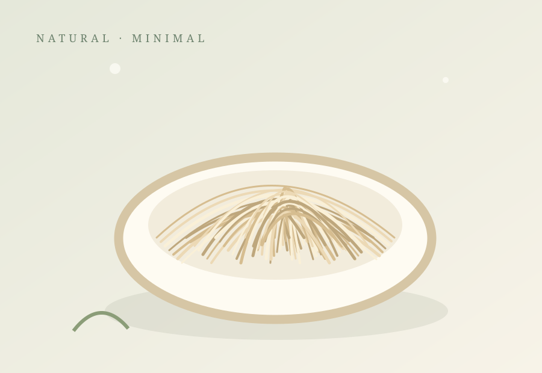
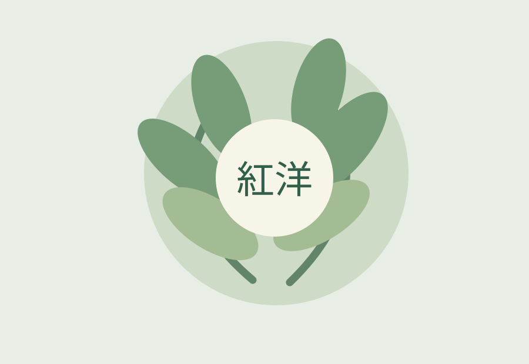

高端食品
進口乾燕窩
從乾燕窩的產品特性、來源資訊與保存方式，認識這項傳統食材。
了解乾燕窩 →以清晰的商品資訊與細緻的內容呈現，帶你認識進口乾燕窩與台灣高端水果的特色與故事。

目前介紹兩個商品類別，其他分類將視實際業務逐步新增。
依實際商品提供來源、產地與必要的產品資訊，協助訪客理解商品背景。
從食材本身出發，用清楚的文字與影像分享值得認識的細節。
商品品種、規格與故事內容可逐步新增，網站架構也能隨業務拓展。

紅洋貿易有限公司的官方形象網站，將以公司介紹、商品內容與品牌故事為起點，建立簡潔、容易閱讀的資訊入口。
正式公司沿革、經營理念與服務資訊，將由管理者確認後陸續補充。
查看更多介紹 →